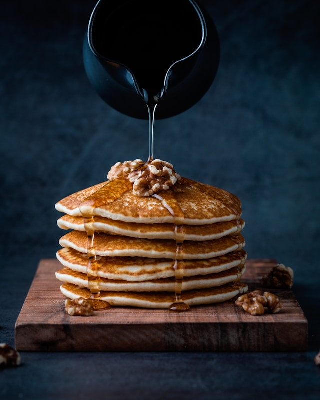

Good Old-Fashioned Pancakes

Description
Dakota Kelly found this pancake recipe in her Grandma's recipe book. Judging from the weathered look of this recipe card, this was a family favorite.
Ingredients
- Flour
- Baking Powder
- Sugar
- Salt
- Milk and Butter
- Egg
Steps
- Sift the dry ingredients together.
- Make a well, then add the wet ingredients. Stir to combine.
- Scoop the batter onto a hot griddle or pan.
- Cook for two to three minutes, then flip.
- Continue cooking until brown on both sides.